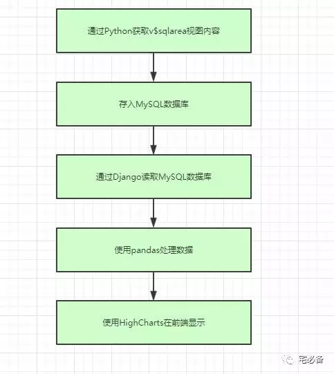
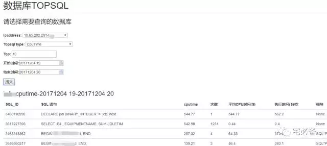
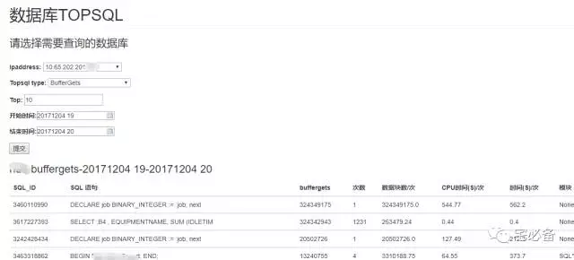
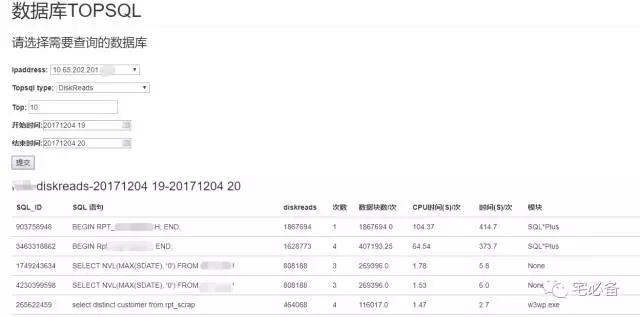

使用Django监控Oracle TOP SQL 介绍
2017-12-04 Python 宅必备
前面介绍了如何利用Python搭建一个网站并且介绍了如何在其中执行Oracle命令并在前端显示出来
然后讲述自定义命令相关的知识
精彩内容可通过公众号自定义菜单查看也可直接查看我的网站
http://www.zhaibibei.cn/oms/1.1/
http://www.zhaibibei.cn/oms/2.1/
http://www.zhaibibei.cn/oms/3.1/
通过上面我们已经知道了如何使用Django获取数据库的信息
接下来我们说的是如何通过Django创建的网站来监控Oracle的TOP SQL
注意事项
前面的内容我使用的是CentOS 6.8+ Python 2.7 的环境
从这期开始已经改成了CentOS 7 +Python 3.6 的环境
关于如何迁移将在后面介绍
1.整体流程图
我们针对TOP SQL 这个监控模块的主要有如何流程

-
首先每小时抓取v$sqlarea视图的SQL 数据，包括物理读，逻辑读，CPU 时间等
-
然后将抓到的数据存入MySQL数据库
-
接下来使用Django读取MySQL数据库里面的数据
-
用pandas将获取到的数据进行处理，主要为对两个时间点的性能数据进行差值计算，然后进行排序得出TOP SQL 语句
-
最后将处理过的数据通过highchats 在前端显示
接下来的几天我将对这些步骤做详细的介绍，谢谢
2. 一些效果图
下面是一些效果图，已经用在了我日常的监控上，使用ajax全程页面无跳转


